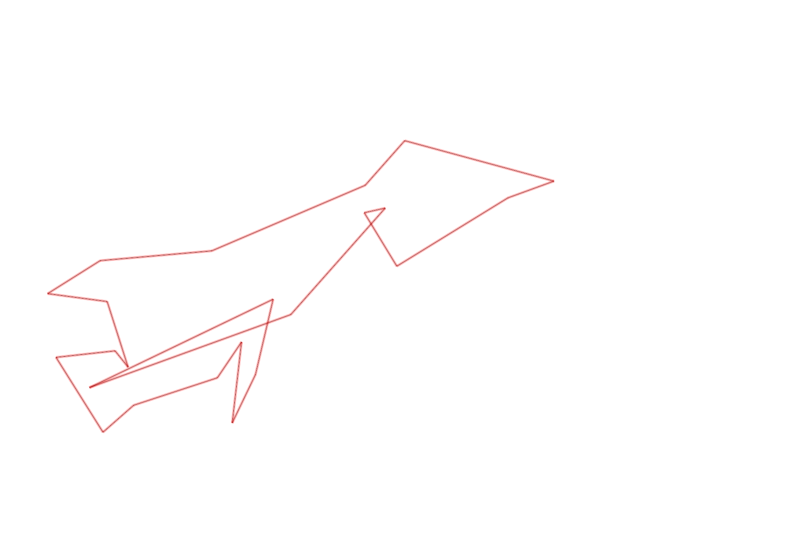
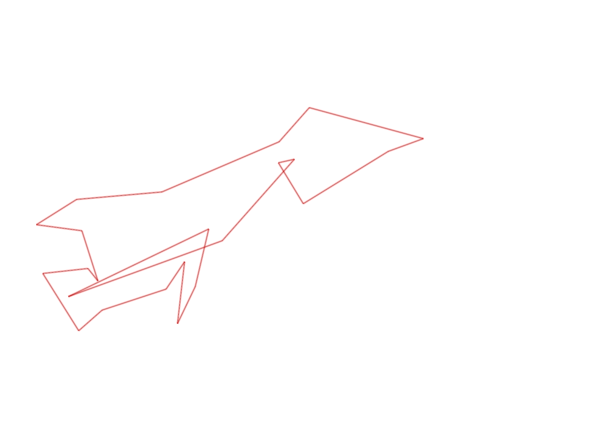

| Control |
Points |
Time Punched |
Distance |
Your Time |
Pace |
Place |
Fastest Time |
Median Time |
% Behind Fastest |
| 38 |
30 |
|
0.21 |
0:00:36 |
02:51 |
2 / 4 |
0:00:31 |
0:00:41 |
16% |
| 74 |
70 |
|
0.14 |
0:00:49 |
05:49 |
3 / 4 |
0:00:42 |
0:00:46 |
16% |
| 43 |
40 |
|
0.22 |
0:02:11 |
09:55 |
3 / 4 |
0:01:31 |
0:01:59 |
43% |
| 60 |
60 |
|
0.12 |
0:00:22 |
03:03 |
2 / 4 |
0:00:16 |
0:00:23 |
37% |
| 41 |
40 |
|
0.24 |
0:01:30 |
06:15 |
2 / 3 |
0:01:28 |
0:01:30 |
2% |
| 40 |
40 |
|
0.11 |
0:01:08 |
10:18 |
2 / 4 |
0:00:47 |
0:01:08 |
44% |
| 53 |
50 |
|
0.24 |
0:03:26 |
14:18 |
1 / 3 |
0:03:26 |
0:03:28 |
0% |
| 45 |
40 |
|
0.16 |
0:01:05 |
06:46 |
4 / 6 |
0:00:59 |
0:01:04 |
10% |
| 62 |
60 |
|
0.06 |
0:01:21 |
22:30 |
2 / 6 |
0:00:39 |
0:01:40 |
107% |
| 44 |
40 |
|
0.19 |
0:01:41 |
08:51 |
1 / 1 |
0:01:41 |
0:01:41 |
0% |
| 55 |
50 |
|
0.16 |
0:01:09 |
07:11 |
1 / 2 |
0:01:09 |
0:03:48 |
0% |
| 32 |
30 |
|
0.17 |
0:01:13 |
07:09 |
3 / 3 |
0:00:45 |
0:01:06 |
62% |
| 58 |
50 |
|
0.3 |
0:03:01 |
10:03 |
2 / 2 |
0:02:11 |
0:02:36 |
38% |
| 67 |
60 |
|
0.45 |
0:07:14 |
16:04 |
2 / 2 |
0:05:35 |
0:06:24 |
29% |
| 34 |
30 |
|
0.16 |
0:02:58 |
18:32 |
4 / 4 |
0:01:32 |
0:02:01 |
93% |
| 109 |
100 |
|
0.42 |
0:03:11 |
07:34 |
2 / 2 |
0:02:52 |
0:03:01 |
11% |
| 50 |
50 |
|
0.13 |
0:02:01 |
15:30 |
3 / 3 |
0:01:44 |
0:01:52 |
16% |
| 47 |
40 |
|
0.35 |
0:06:52 |
19:37 |
1 / 1 |
0:06:52 |
0:06:52 |
0% |
| 33 |
30 |
|
0.17 |
0:07:18 |
42:56 |
1 / 1 |
0:07:18 |
0:07:18 |
0% |
| 31 |
30 |
|
0.06 |
0:02:53 |
48:03 |
3 / 3 |
0:02:06 |
0:02:21 |
37% |
| 127 |
20 |
|
0.38 |
0:05:23 |
14:10 |
1 / 1 |
0:05:23 |
0:05:23 |
0% |
| 69 |
60 |
|
0.58 |
-1 day, 23:10:33 |
39:57:30 |
1 / 2 |
-1 day, 23:10:33 |
-1 day, 23:10:36 |
0% |
| Finish |
0 |
|
0.55 |
0:49:57 |
1:30:49 |
3 / 4 |
0:04:12 |
0:49:56 |
1089% |
Total Distance Covered: 5.57km
Points Scored: 1020
Late Penalty: 0
Final Score: 960
Total Time: 0hours 57minutes 52seconds
Efficiency: 172.35 points/km
 
